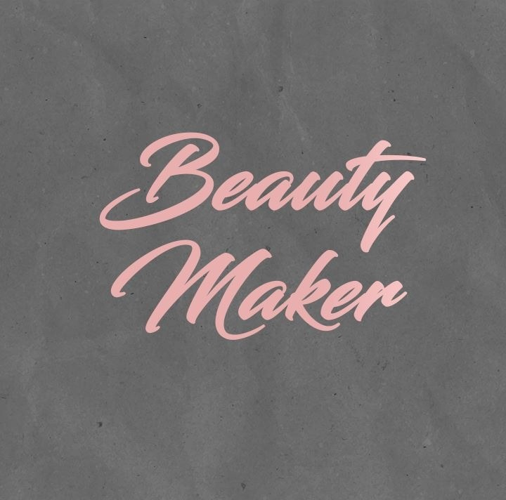

Beauty Maker
Início
Serviços
Quem Somos?
Profissionais em Destaque
Edvan Moura
Experiência: 8 anos
Especialidade: Maquiagem de noivas
Cecilia Pinto
Experiência: 8 anos
Especialidade: Maquiagem de noivas